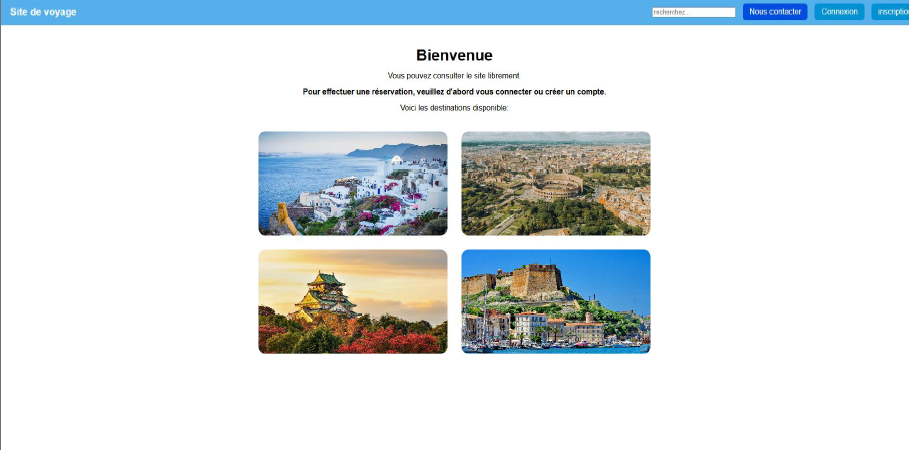
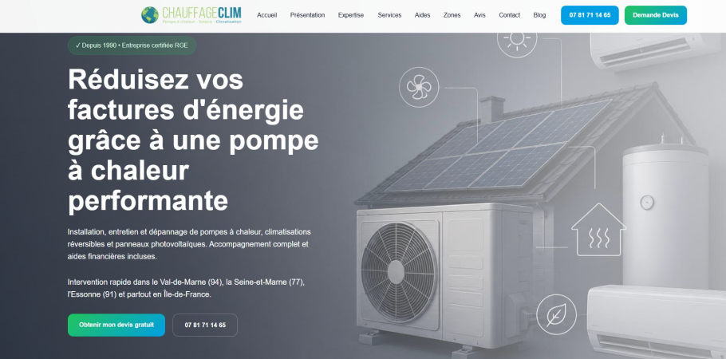
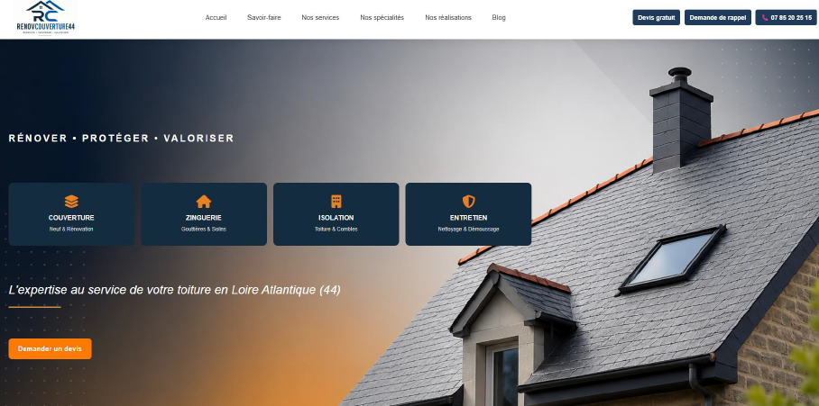

Stage chez GenContact
Du 18 mai au 26 juin 2026, j'ai effectué un stage de six semaines au sein de GenContact, une agence de communication digitale située à Guignes.
Cette première expérience professionnelle m'a permis de participer à des projets concrets et de développer mes compétences dans le domaine du développement web.
Présentation de l'entreprise
Entreprise : GenContact
Localisation : Guignes (Seine-et-Marne, 77)
Période : 18 mai au 26 juin 2026
Durée : 6 semaines
Service : Pôle développement web
GenContact est une agence de communication digitale créée en 2008. Elle accompagne les professionnels, commerçants, artisans et PME dans leur présence sur Internet.
L'entreprise propose notamment la création de sites vitrines et e-commerce, le développement d'applications web, le référencement naturel (SEO) et la communication numérique.
Durant mon stage, j'ai intégré le pôle développement, composé de trois développeurs web.
Objectifs du stage
L'objectif principal était de découvrir le fonctionnement d'une agence web tout en participant à des projets de développement informatique.
- Découvrir un environnement professionnel.
- Réaliser des sites web avec HTML, CSS et PHP.
- Approfondir mes connaissances en SQL et en gestion de bases de données.
- Apprendre à utiliser des outils professionnels de développement.
- Développer mon autonomie et ma capacité à résoudre des problèmes.
Projet 1 : DashVoyage
Mon premier projet consistait à développer un site de voyage permettant aux utilisateurs de consulter des destinations et d'effectuer des réservations en ligne.
Le site a été réalisé en HTML, CSS et PHP, avec une base de données pour gérer les informations des utilisateurs et leurs réservations.
Fonctionnalités réalisées :
- Création de comptes utilisateurs.
- Connexion des utilisateurs.
- Gestion des sessions PHP.
- Système de réservation de voyages.
- Enregistrement des informations en base.
- Utilisation de requêtes SQL.
Ce projet m'a permis de mieux comprendre les échanges entre le front-end, le back-end et une base de données.

Capture d'écran du site DashVoyage, réalisé durant mon stage chez GenContact.
Projet 2 : ChauffageClim
Mon deuxième projet consistait à créer un site vitrine pour une entreprise spécialisée dans le chauffage, la climatisation et les solutions énergétiques.
L'objectif était de présenter les prestations de l'entreprise et de faciliter la prise de contact avec les visiteurs.
Fonctionnalités réalisées :
- Création d'une page d'accueil présentant les services.
- Pages détaillées des prestations.
- Formulaire de contact et de demande de devis.
- Navigation entre les différentes pages.
- Adaptation responsive pour ordinateur, tablette et téléphone.
Ce projet m'a permis de développer mon autonomie et mes compétences dans la conception de sites vitrines professionnels.

Capture d'écran du site vitrine ChauffageClim, réalisé durant mon stage.
Projet 3 : RenovCouverture44
Mon troisième projet consistait à développer un site vitrine pour une entreprise spécialisée dans les travaux de couverture et la pose de fenêtres de toit.
Le site devait présenter les prestations, valoriser le savoir-faire de l'entreprise et permettre aux visiteurs de demander un devis ou un rappel.
Fonctionnalités réalisées :
- Page d'accueil présentant l'entreprise.
- Pages de présentation des services.
- Section consacrée aux réalisations.
- Page de blog.
- Formulaire de contact en plusieurs étapes.
- Navigation simple et intuitive.
L'utilisation de JavaScript m'a permis de découvrir de nouvelles possibilités pour rendre un site plus interactif.

Capture d'écran du site RenovCouverture44, réalisé durant mon stage chez GenContact.
Outils et technologies utilisés
Visual Studio Code m'a permis de développer les différents sites. Laragon a été utilisé pour tester les projets en environnement local.
phpMyAdmin m'a permis d'administrer les bases de données, tandis que PHPMailer a servi à simuler des envois d'e-mails.
FileZilla était utilisé pour transférer les fichiers des projets vers l'hébergement.
Difficultés rencontrées
Découverte de Laragon
Au début du stage, j'ai dû apprendre à utiliser Laragon, un environnement de développement que je ne maîtrisais pas encore. Pour cela, j'ai consulté sa documentation officielle.
Correction de bugs
J'ai rencontré plusieurs erreurs en PHP et en JavaScript. J'ai appris à inspecter mon code, à rechercher l'origine des anomalies et à les corriger progressivement.
Organisation du travail
Certaines fonctionnalités m'ont demandé plus de temps que prévu. J'ai appris à mieux organiser mes tâches, à définir des priorités et à découper les problèmes en étapes plus simples.
Compétences développées
- Concevoir des pages web avec HTML et CSS.
- Développer des fonctionnalités avec PHP.
- Manipuler une base de données avec SQL.
- Utiliser les sessions et les formulaires.
- Créer des interfaces responsive.
- Tester une application et corriger les erreurs rencontrées.
- Organiser le développement de projets web.
- Travailler dans un environnement professionnel et gagner en autonomie.
Bilan personnel
Ce premier stage chez GenContact a été une expérience enrichissante qui m'a permis de découvrir le fonctionnement d'une agence web.
Les trois projets réalisés m'ont permis de renforcer mes compétences en développement front-end et back-end, ainsi qu'en gestion de bases de données.
J'ai également gagné en autonomie, appris à mieux organiser mon travail et développé ma capacité à rechercher des solutions face aux difficultés.
Cette expérience a confirmé mon intérêt pour le développement web et mon envie de poursuivre mes études dans ce domaine.
Mon rapport de stage
Retrouvez mon rapport complet de première année, présentant l'entreprise, mes trois projets, les outils utilisés et mon bilan professionnel.
Consulter mon rapport Télécharger mon rapport